原版 A / 独立参考 D
Partial · 公开界面配对主比较条件：Windows Chrome155，1440×1000 CSS px / DPR1，en-US，公开未登录界面。原图和参考分次采集，不是原子快照。参考行为通过不证明原站行为。
| 组件 | Δx | Δy | Δw | Δh |
|---|---|---|---|---|
| .composer | 0 | 0 | 0 | 0 |
| .underlay | 0 | 0 | 0 | 0 |
| .shortcuts | 0 | 0 | 0 | 0 |
| .sidebar | 0 | 0 | 0 | 0 |
单位CSS px；这里只证明这些矩形。图标轮廓、字形细节、弹层内容和动画时序分别说明，不用总体相似度替代验收。
公开首页 · 1440×1000 · 亮色
输入为空，侧栏与账号菜单展开。图标为D替代。

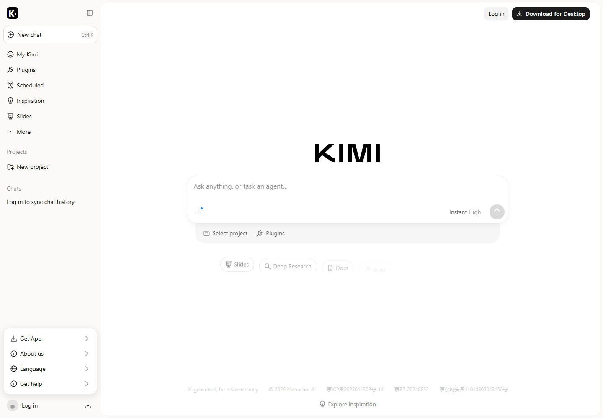
带说明的模式菜单
相同宽度和文本层级。子选项内嵌是D适配。
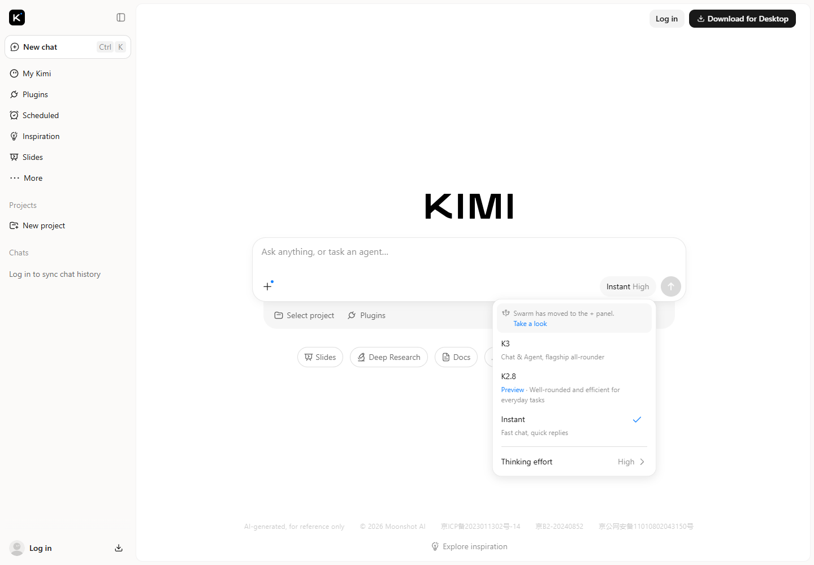
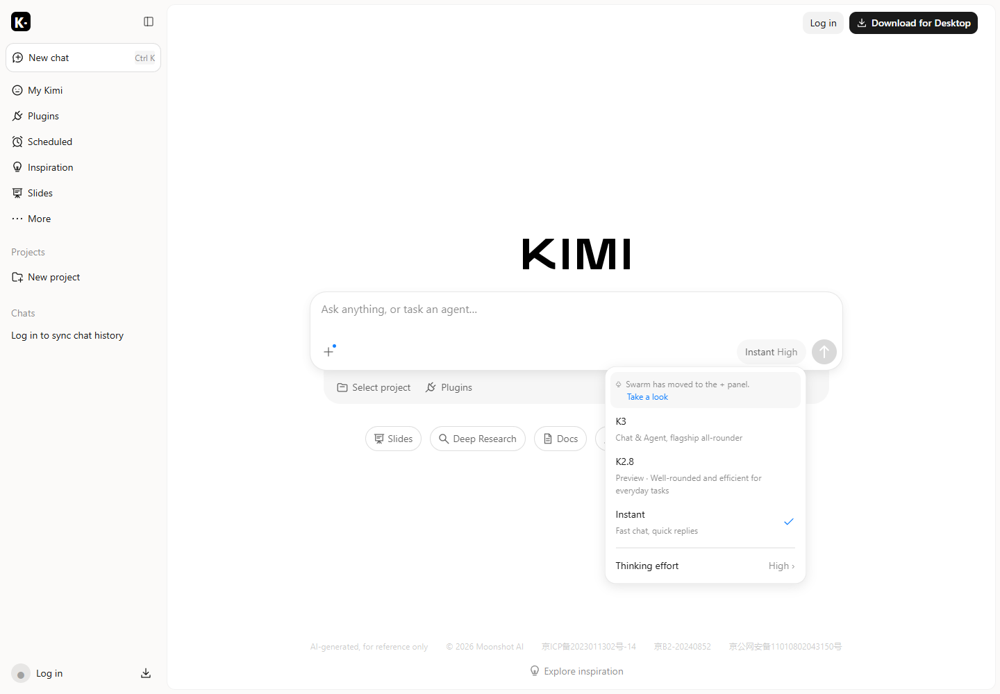
宽工具面板
菜单区域与输入同宽。参考文字和图标细节有差别。
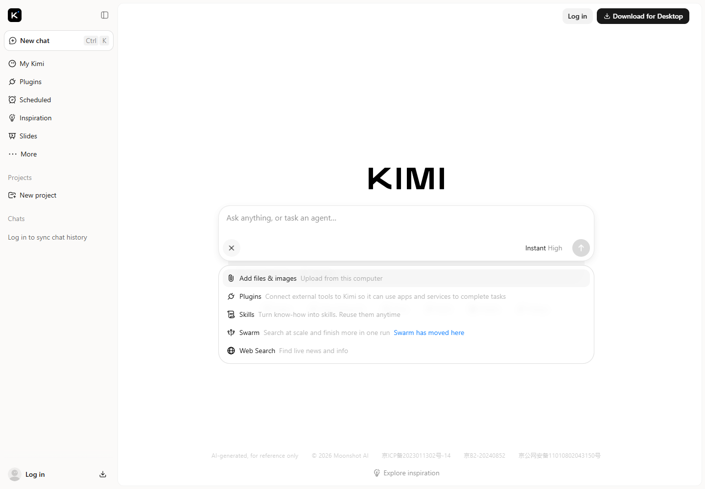
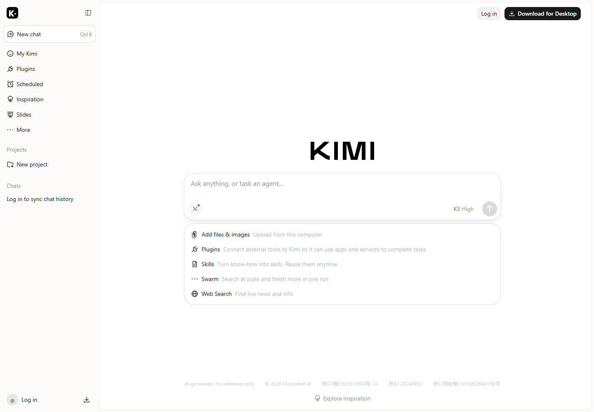
有草稿的登录弹层
QR替换为不可扫描占位，增加关闭按钮。
原版图含登录二维码。公开包保留测量和原始SHA，原图不分发；右侧D参考使用不可扫描占位。
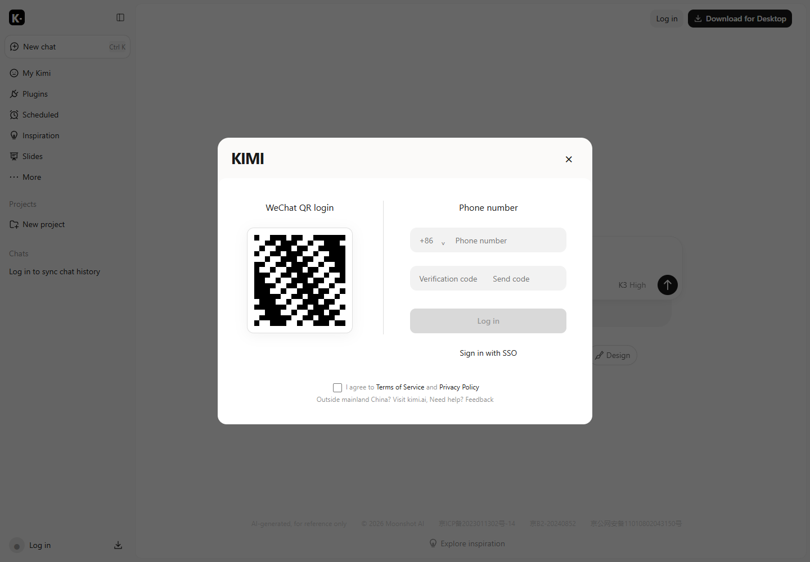
侧栏收起
主画布左距6，输入重新居中。
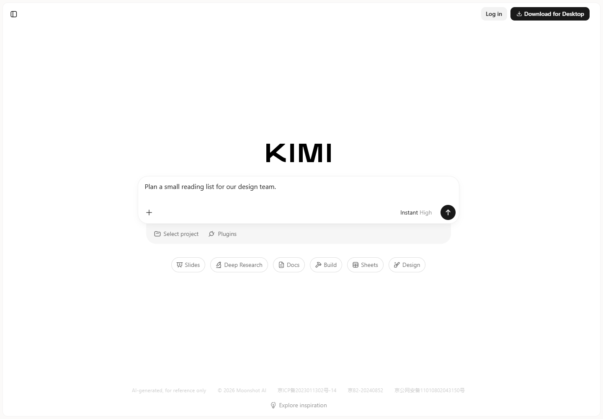
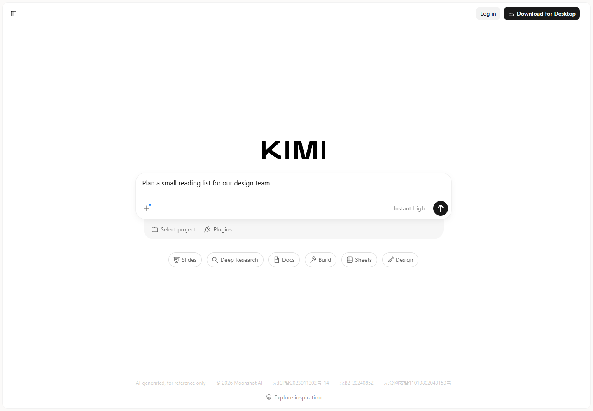
暗色偏好
暗色语义token；原图和参考使用同一合成文字颜色。
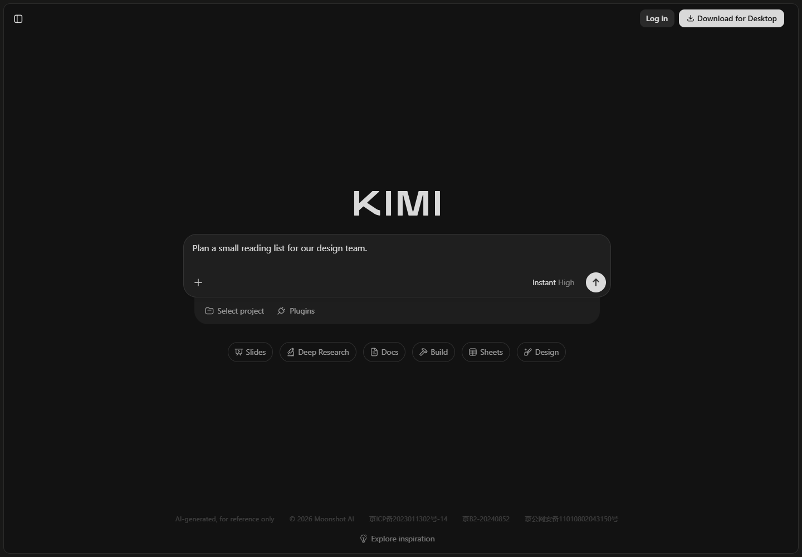
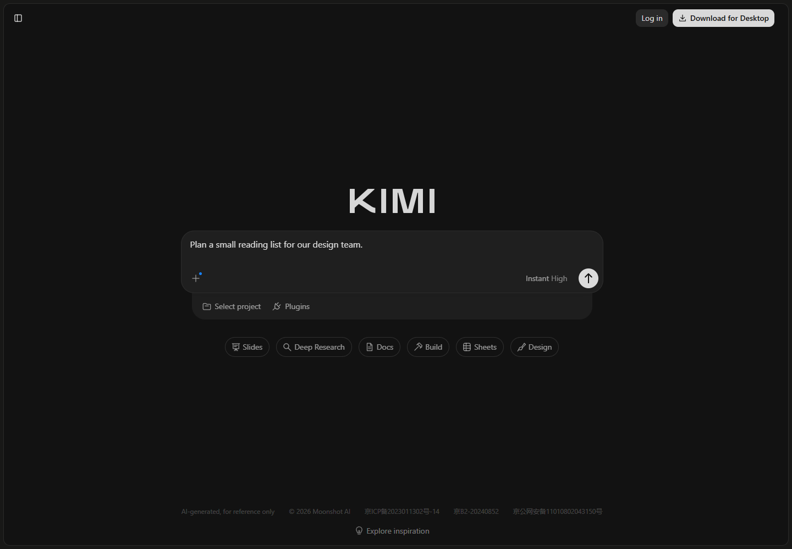
390×844窄屏
桌面UA resize；快捷入口省略原站渐变箭头。
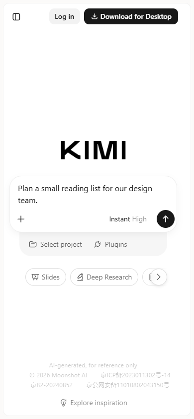
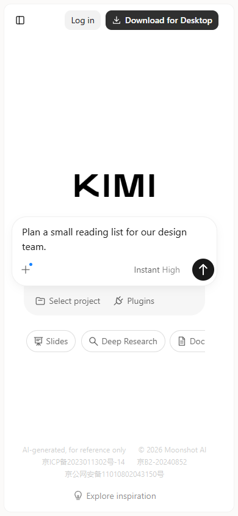
画廊结构
D阅读封面替换原媒体；保留卡片比例/角/间距，去掉底部输入。
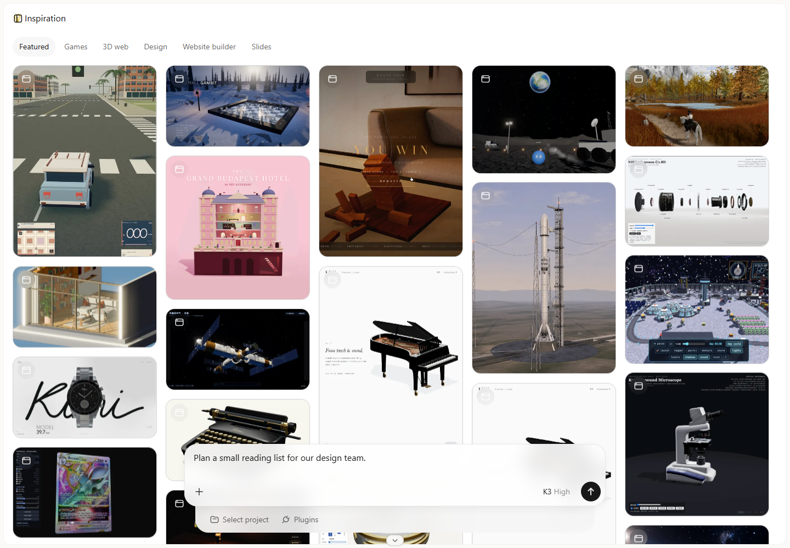
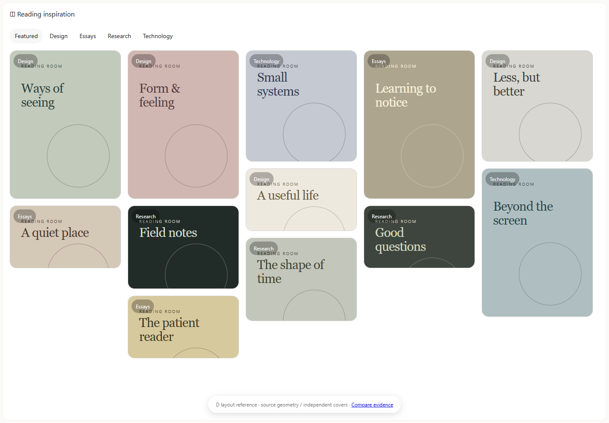
跨业务切片 · Reading Room
独立D样例：本地创建、集合、完成状态、筛选与刷新持久化。没有连接Kimi后端。
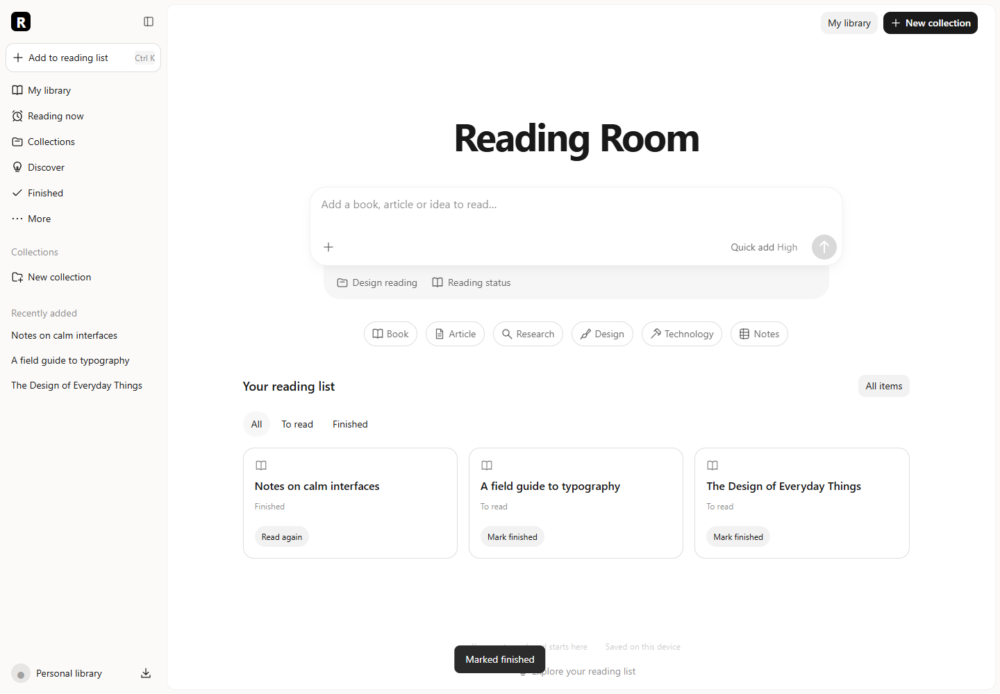
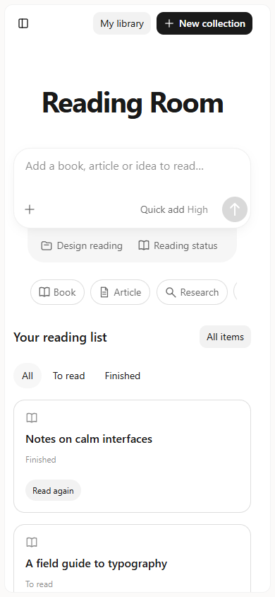
22项执行验证 · 完整几何值 · 设计规范与缺口 · 画廊参考
原始图片保留作私有研究；许可未知，不自动授权公开分发。完整Kimi登录后会话/项目/插件尚缺证据；加载和错误的D样例未提高原版覆盖等级。